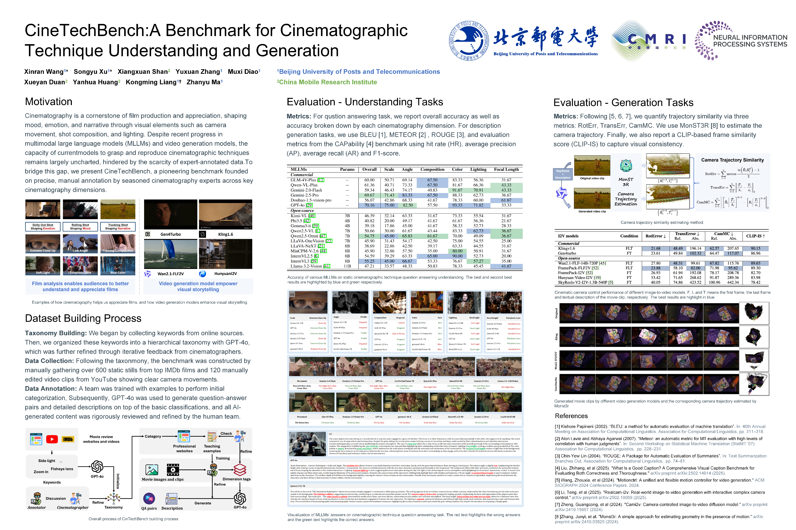
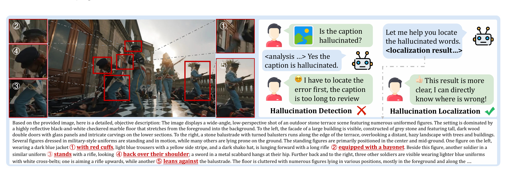

 CineTechBench: A Benchmark for Cinematographic Technique Understanding and Generation NeurIPS 2025 · CCF-A共同第一作者 ProjectPaperCode
VGIF-Score: Interpretable and Diagnostic Evaluation of Spatio-Temporal Instruction Following in Video Generation PRCV 2026 · CCF-C第一作者 ProjectPaperCode
 DetailVerifyBench: A Benchmark for Dense Hallucination Localization in Long Image Captions 在投共同作者 ProjectPaperCode